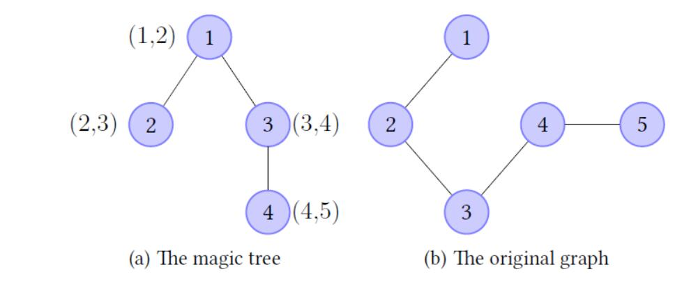

Case #1:
3
2
1
Hint
magic tree and the original graph in the sample are:

In the first query, S = {2} and the modified graph G' = {{1, 2, 3, 4}, {(1, 2), (2, 3)}}, thus the number of the components in the modified graph is 3.
In the second query, S = {1, 2, 3}, where 1 is the ancestor of 2 (and 3) in the magic tree, and the modified graph G'' = {{1, 2, 3,4}, {(1, 2), (2, 3), (3, 4)}},
therefore the number of the components in the modified graph is 2.
In the third query, S = {1, 2, 3, 4}, where 1 is the ancestor of 2 (and 4), 3 is the ancestor of 4, and the modified graph G' = {{1, 2, 3,4}, {(1, 2), (2, 3), (3,4), (4, 5)}},
therefore the answer equals to 1.